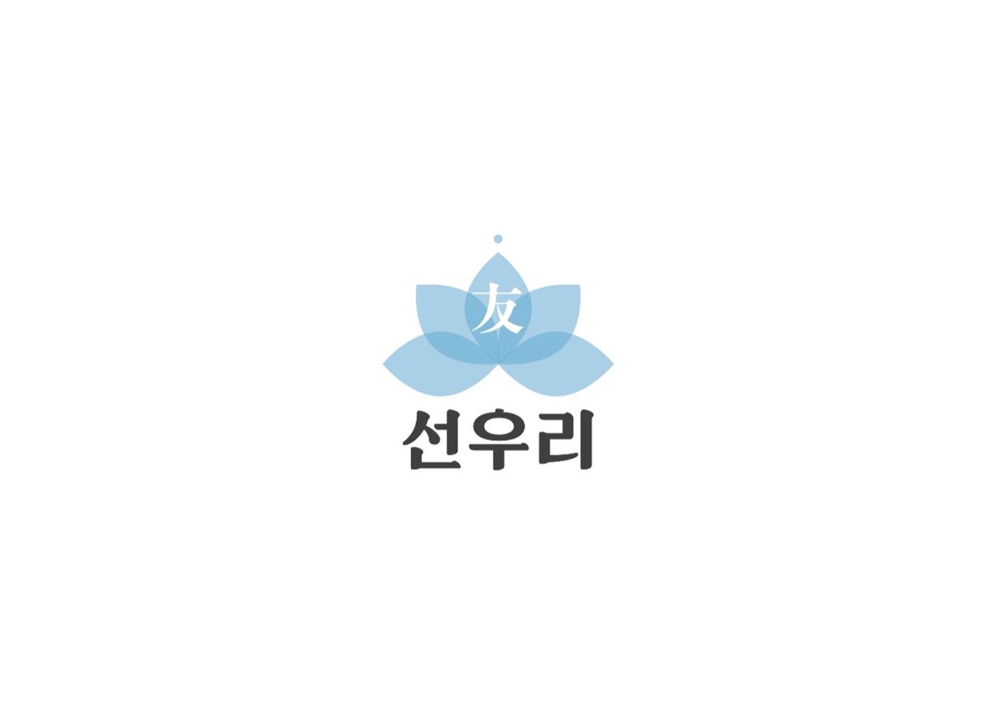
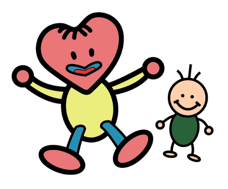
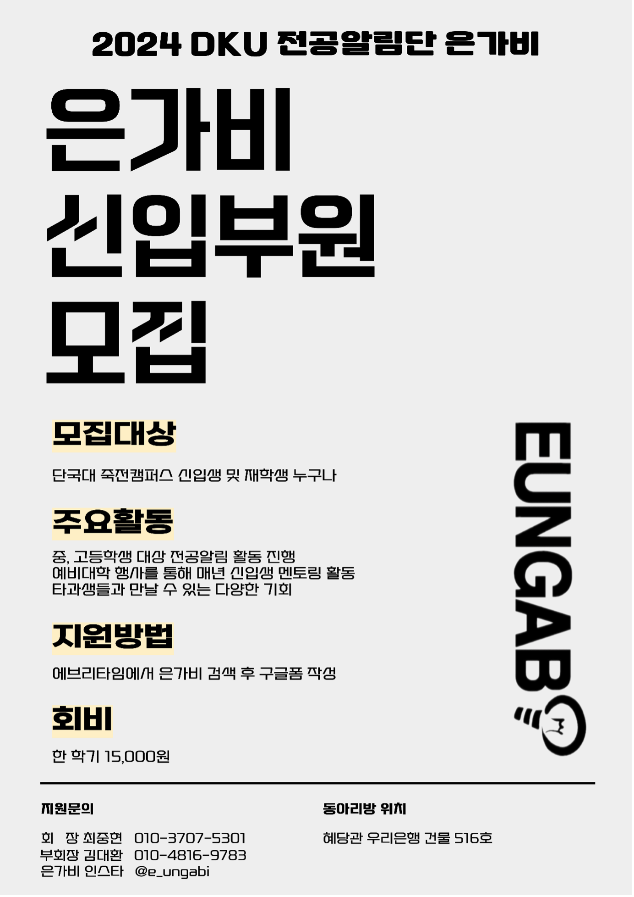
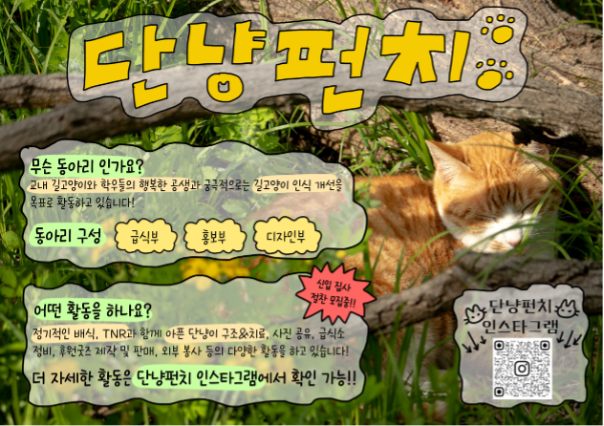
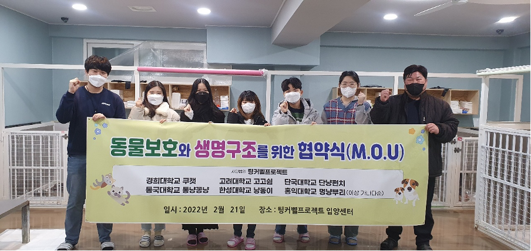

봉사활동이 필요한 어스인
▶ 단비 ◀
단국대 해비타트의 줄임말로 열악한 주거환경에 놓인 사람들에게 사랑의 집짓기, 사랑의 집고치기 등을 통해 행복한 가정을 일으켜 세워주는 해비타트 운동을 전개함
▶ 미소 ◀
상처받은 유기견, 미소지킴이가 함께합니다!
▶ 선우리 ◀

1970년 생겨난 봉사동아리로 형제애호를 통한 홍익인간의 이념실천
▶ 아이사랑 ◀

[단국대 교육봉사 동아리 아이사랑]
저희 동아리는 소외계층 초등 중등 아이들을 대상으로 3곳의 지역아동센터에서 매주 1회 교육봉사를 실시합니다. (횟수와 주기는 상황에 따라 유동적으로 변경)
첫째! 졸업을 하기 위한 40시간의 봉사활동 아이사랑을 통해 간편하게 채우기!
둘째! 기왕 해야하는 봉사활동 가치있고 의미잇는 교육봉사로 아이들과 친해지며 채우기! (아이들이 진짜 무지 귀여워요)
셋째! 동아리의 세심한 관리로 정기적으로 그리고 즐겁게 봉사활동 나가기!
행사
첫째! 연 4회의 엠티! 대학생활의 꽃인 엠티를 무려 4번!!이나 즐기며 동기, 선후배간 무한정 친해지기!
둘째! 체육대회, 창립제, 축제 등 다양한 의미있는 행사가 항시 대기 중!
셋째! 어린이날 행사, 센터주관 체육대회 등 다양한 행사로 아이들과 친해질 기회!
넷째! 동아리원끼리의 크고 작은 소모임으로 지루할 틈 없는 학교생활!
동아리 생활
첫째! 동아리 집행부가 세심하게 회원 하나하나 관리하여 참여에 소외되는 인원이 없도록 운영!
둘째! 아늑~한 동방에서 언제든지 공강 때 쉬러오고 시험기간에는 밤샘공부도 다 같이!
(주의: 진짜 너무 편해서 못 벗어날 수도 있음)
셋째! 그 어느 곳보다도 돈독하고 따뜻한 선후배관계!
궁금한 점은 회장 연락처 또는 아이사랑 인스타그램 @dku_i.love 로 연락 주시면 빠르게 답변 드리도록 하겠습니다
아이사랑과 재밌는 추억 만들고 싶으신 모든 분들을 환영합니다~
인스타 : dku_i.love
회장 윤혜진 (010-2742-6201)
부회장 류재연 (010-3389-4796)
▶ UNSA ◀
[동아리 소개]
유엔한국협회(UNA)의 산하단체이며 UN의 목적과 이념에 부합하는 활동을 진행하고 있습니다. 또한 단국대학교 죽전캠퍼스 중앙동아리 소속이며 14개 지회(건국, 경기, 경북, 경희, 단국, 동국, 동아, 부산외대, 서울, 성신, 세종, 숙명, 숭실, 전남)와 1개 지부(전국)로 이루어진 연합동아리입니다.
[활동]
1. 지회 내 활동
- 용인시 청년봉사단 활동
- 한강안전캠페인 봉사
- 아동센터봉사
- SDGs 관련 캠페인
- 한국근육장애인협회 여름봉사캠프 보조
2. 연합활동
- UN 관련 단체(세계평화의 날 조직위원회, 청년평화의회, SDSN 등)와 공동 프로젝트 및 다양한 활동
- UNSA 소속 여러 대학들과의 MT, 학술대회, 봉사활동 등
[모집대상]
단국대 죽전캠퍼스 소속 대학(원)생
활동에 열정적으로 참여해주실 분
다양한 사람들과 만남을 통해 친목을 다지고싶은 분
[가입비]
UNSA 단체 등록 및 지회 활동 운영을 위해 1년에 20,000원씩 모으고 있습니다.
[지원방법]
아래 링크에 지원서를 작성해주세요!
https://forms.gle/UHnBD6LuZwN88pDw5
[문의]
회장 : 김건우 010-9730-7819
부회장: 이민호 010-2640-8978
인스타 : unsa_dankook
궁금하신 점은 인스타 DM 혹은 에브리타임 댓글 남겨주시면 해결해드리겠습니다!
▶ Enactus ◀
기업가정신의 실천으로 지속가능하고 더 나은 세상을 만드는 인액터스입니다.
▶ 은가비 ◀

중앙동아리인 은가비는 단국대학교 유일무이한 '전공 알림' 동아리입니다.
매 학기 주변 인근 중고등학교를 통해 각 학과 별로 신청자를 받아 학생들에게 자신의 학과를 소개하고, 전공을 알리는 활동을 주로 하고 있습니다.
또한 매년 단국대학교 신입생을 대상으로 하는 '예비대학' 행사를 통해 멘토-멘티 관계를 형성하여 멘토링 활동을 진행하는 등 활발한 활동을 하고 있습니다.
▶ 단냥펀치 (가등록 동아리) ◀

